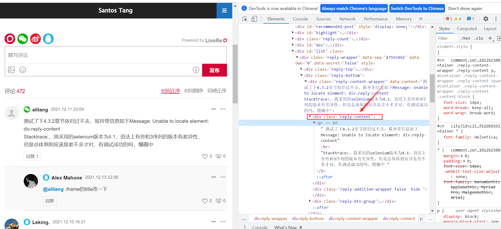
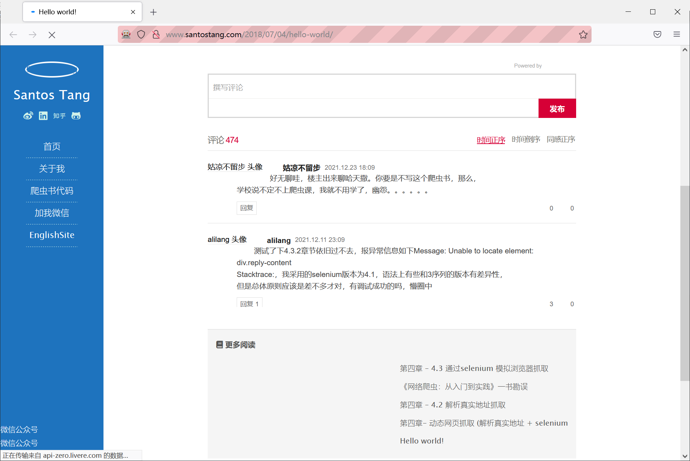

selenium案例
使用Chrome的检查定位评论位置

我们可以提取评论数据
from selenium import webdriver
driver = webdriver.Firefox(executable_path="D:\GeckoDriver\geckodriver")
# driver.get("http://www.santostang.com/2018/07/04/hello-world/")
comment = driver.find_element_by_css_selector('div.reply-content').find_element_by_tag_name('P')
print(comment.text)但是报错了selenium.common.exceptions.NoSuchElementException: Message: Unable to locate element: div.reply-content
使用driver.page_source审查，封装在了iframe框架里面
#加入iframe解析
from selenium import webdriver
from selenium.webdriver.common.by import By
from selenium.webdriver.firefox.service import Service
s = Service(r"D:\\GeckoDriver\\geckodriver.exe")
#driver = webdriver.Firefox(executable_path="D:\GeckoDriver\geckodriver")
driver = webdriver.Firefox(service=s)
driver.get("http://www.santostang.com/2018/07/04/hello-world/")
driver.switch_to.frame(driver.find_element(By.CSS_SELECTOR, "iframe[title='livere-comment']"))
comment = driver.find_element(By.CSS_SELECTOR, 'div.reply-content').find_element(By.TAG_NAME, 'P')
print(comment.text)就可以得到评论内容了
获取所有评论
模拟点击加载评论
通过观察button标签，确定它
from selenium import webdriver
from selenium.webdriver.common.by import By
from selenium.webdriver.firefox.service import Service
import time
s = Service(r"D:\\GeckoDriver\\geckodriver.exe")
#driver = webdriver.Firefox(executable_path="D:\GeckoDriver\geckodriver")
driver = webdriver.Firefox(service=s)
driver.get("http://www.santostang.com/2018/07/04/hello-world/")
time.sleep(5)
for i in range(3):
#下滑到页面底部
#driver.execute_script("window.scrollTo(0, document.body.scrollHeight);")
#解析frame,找到翻看评论，做出点击操作
driver.switch_to.frame(driver.find_element(By.CSS_SELECTOR, "iframe[title='livere-comment']"))
load_more = driver.find_element(By.CSS_SELECTOR, "div.list-reduce button")
load_more.click()
#转回iframe
driver.switch_to.default_content()
time.sleep(2)
driver.switch_to.frame(driver.find_element(By.CSS_SELECTOR, "iframe[title='livere-comment']"))
comments = driver.find_elements(By.CSS_SELECTOR, "div.reply-content")
for comment in comments:
content = comment.find_element(By.TAG_NAME, 'p')
print(content.text)selenium实现自动操作网页：
- clear:清除元素内容
- send_keys 模拟键盘输入
- click 点击元素
- submit 提交表单
Selenium的高级操作
使用selenium控制浏览器加载的内容，从而加载爬取速度
- 控制CSS的加载
- 控制图片文件的加载
- 控制js的执行
CSS控制
限制图片的加载
from selenium import webdriver
from selenium.webdriver.firefox.service import Service
s = Service(r"D:\\GeckoDriver\\geckodriver.exe")
options = webdriver.FirefoxOptions()
options.set_preference('permissions.default.image',2)
driver = webdriver.Firefox(service=s, options=options)
driver.get("http://www.santostang.com/2018/07/04/hello-world/")
限制javascript的执行
from selenium import webdriver
from selenium.webdriver.firefox.service import Service
s = Service(r"D:\\GeckoDriver\\geckodriver.exe")
options = webdriver.FirefoxOptions()
# options.set_preference('permissions.default.image',2)
options.set_preference("javascript.enabled", False)
driver = webdriver.Firefox(service=s, options=options)
driver.get("http://www.santostang.com/2018/07/04/hello-world/")实践
得到某房源的名称，价格，评价数量，房屋类型，床数量，访客数量
使用F12检查功能
得到数据
开始抓取
from selenium import webdriver
from selenium.webdriver.firefox.service import Service
from selenium.webdriver.common.by import By
import time
s = Service(r"D:\\GeckoDriver\\geckodriver.exe")
driver = webdriver.Firefox(service=s)
driver.get("https://www.airbnb.cn/s/Shenzhen--China?page=1")
time.sleep(5)
rent_list = driver.find_elements(By.CSS_SELECTOR, 'div._zhz0z8')
time.sleep(2)
for eachhouse in rent_list:
name = eachhouse.find_element(By.CSS_SELECTOR, 'div._qrfr9x5')
name = name.text
price = eachhouse.find_element(By.CSS_SELECTOR, 'span._1d8yint7 :nth-child(2)')
price = price.text
comment = eachhouse.find_element(By.CSS_SELECTOR, 'span._69pvqtq')
comment = comment.text
house_type = eachhouse.find_element(By.CSS_SELECTOR, "span[style='color: rgb(118, 118, 118);']")
house = house_type.text
house_type = house[:7]
bedroom = house[12:]
print("---------------------------------")
print("房源名称：", name)
print("价格：", price)
print("评价数量：", comment)
print("房间类型：", house_type)
print("房间布局", bedroom)
print("---------------------------------")
time.sleep(3)爬取多个页面的数据，通过观察url很明显可以发现page参数可变
解析网页
使用正则表达式解析网页
正则的使用方法
re.match()
re.match(pattern, string, flags=0) => 其中的flags是控制其匹配方式(是否区分大小写，多行匹配)
import re m = re.match('www', 'www.baidu.com') print(m) print(m.span()) print(m.start()) print(m.end()) # <re.Match object; span=(0, 3), match='www'> # (0, 3) # 0 # 3可以使用正则的方式匹配
一般会在正则表达式前加上修饰字符
r，r'\d',这里的r是raw string的意思，不会对引号里面的\进行特殊处理re.search()
re.match()只能从字符串的起始位置开始匹配，re.search()能够扫描整个字符串，并返回第一个成功的匹配
import re m = re.match('com', 'www.baidu.com') n = re.search('com', 'www.baidu.com') print(m) print(n) # None # <re.Match object; span=(10, 13), match='com'>re.findall()
re.match()和re.search()只能找到一个匹配，就会停止匹配，但是re.findall()会找出所有满足的匹配项
import re str = '1234 is the first number and 5678 is the second number!' m_match = re.match('[0-9]+', '1234 is the first number and 5678 is the second number!') m_search = re.search('[0-9]+', str) m_findall = re.findall('[0-9]+', str) print(m_match.group()) print(m_search.group()) print(m_findall) # 1234 # 1234 # ['1234', '5678']
使用bs4解析网页
上一篇文章已经讲了
遍历文档树
- 利用contents输出子节点
soup.header.div.contents - 利用
children获取子标签soup.header.div.children - 利用
descendants获取子子孙孙节点soup.header.div.descendants - 利用
parent获取父节点soup.header.div.a.parent
搜索文档树
- find方法
- find_all方法
上一篇文章已经使用过了
这里可以配合正则进行使用
soup.find_all(re.compile("^h")) => 匹配所有以h开头的标签
CSS选择器
- 通过标签逐层寻找
soup.select("header h3") - 通过某个标签的子标签遍历
soup.select("div > a"),返回div标签下的所有a标签 - 实现搜索文档的功能
soup.select("a[href^='www.baidu.com']")=> 找到所有以www.baidu.com开头的a标签
利用lxml解析网页
获取所有标题
import requests
from lxml import etree
url = "http://www.santostang.com/"
headers = {'User-Agent':'Mozilla/5.0 (Windows NT 10.0; Win64; x64) AppleWebKit/537.36 (KHTML, like Gecko) Chrome/96.0.4664.110 Safari/537.36'}
res = requests.get(url, headers=headers)
html = etree.HTML(res.text)
title_list = html.xpath("//h1[@class='post-title']/a/text()")
print(title_list)
#['第四章 – 4.3 通过selenium 模拟浏览器抓取', '第四章 – 4.2 解析真实地址抓取', '第四章- 动态网页抓取 (解析真实地址 + selenium)', 'Hello world!']- XPath的选取方法
| 表达式 | 描述 |
|---|---|
| nodename | 选取此节点的所有子节点 |
| / | 从根节点选取 |
| // | 不考虑所选节点的位置 |
| . | 选取当前节点 |
| .. | 选取父节点 |
| @ | 选取属性 |
实践
目标：
获取二手房源名称，价格，几房几厅，大小，建造年份，联系人，地址，标签。
使用F12的检查功能
抓取第一页数据
#!/usr/bin/python
# coding: UTF-8
import requests
from bs4 import BeautifulSoup
import time
url = "https://beijing.anjuke.com/sale/p1/"
headers = {'User-Agent':'Mozilla/5.0 (Windows NT 10.0; Win64; x64) AppleWebKit/537.36 (KHTML, like Gecko) Chrome/96.0.4664.110 Safari/537.36'}
respond = requests.get(url, headers=headers)
soup = BeautifulSoup(respond.text, 'lxml')
house_list = soup.find_all('div', class_='property')
for house in house_list:
name = house.find('h3', class_='property-content-title-name').text.strip()
price = house.find('p', class_='property-price-total').text.strip()
house_type = house.find('p', class_='property-content-info-text property-content-info-attribute').text.strip()
size = house.find('div', class_='property-content-info').contents[2].text.strip()
date = house.find('div', class_='property-content-info').contents[8].text.strip()
connection_person = house.find('div', class_='property-extra').contents[2].text
address = house.find('div', class_='property-content-info property-content-info-comm').text.strip()
print("--------------------------------")
print("名称：", name)
print("价格：", price)
print("几房几厅：", house_type)
print("大小：", size)
print("建造日期：", date)
print("联系人：", connection_person)
print("地址：", address)
print("--------------------------------")
time.sleep(2)抓取前十页的数据
观察url的不同，可以通过for循环再加上前面的程序就可以实现抓取前十页的内容了
数据存储
基本存储
存储进入TXT文本
title = "这是一个标题"
with open('test.txt', 'w') as f:
f.write(title)
f.close()打开文件的方式：
| 读写方式 | 可否读写 | 若文件不存在 | 写入方式 |
|---|---|---|---|
| w | 写入 | 创建 | 覆盖写入 |
| w+ | 读取+写入 | 创建 | 覆盖写入 |
| r | 读取 | 报错 | 不可写入 |
| r+ | 读取+写入 | 报错 | 覆盖写入 |
| a | 写入 | 创建 | 附加写入 |
| a+ | 读取+写入 | 创建 | 附加写入 |
join方法：
title = '\t'.join(['name', 'title', 'age'])
with open('test.txt', 'w') as f:
f.write(title)
f.close()存储进入CSV
CSV是一种以逗号分隔值的文件类型，既可以使用记事本打开，也可以是用Excel打开
读取CSV文件的方法：
import csv
with open('test.csv', 'r', encoding='UTF-8') as f:
csv_reader = csv.reader(f)
for row in csv_reader:
print(row)
# 将每一行转换为列表
# 每个元素是一个字符串写入CSV文件的方法：
import csv
output_list = [1,2,3,4]
with open('test.csv', 'a+', encoding='UTF-8') as f:
csv_writer = csv.writer(f)
csv_writer.writerow(output_list)存储到mysql数据库
建立
scraping库创建
urls表表结构：
create table urls(id int not null auto_increment, url varchar(1000) not null, content varchar(4000) not null, created_time timestamp default current_timestamp, primary key (id));
python操控mysql
from pymysql.cursors import Cursor
db = pymysql.connect(host='localhost', user='root', passwd='root', database='scraping')
cur = db.cursor()
cur.execute('select version()')
data = cur.fetchone()
print(data)
db.close()可以得到mysql版本号
插入数据：
import pymysql
from pymysql.cursors import Cursor
db = pymysql.connect(host='localhost', user='root', passwd='root', database='scraping')
cur = db.cursor()
cur.execute("insert into urls (url, content) values('www.baidu.com', 'This is the content.')")
cur.close()
db.commit()
db.close()成功插入数据
我们可以考虑将之前抓取到的title和对应的url存入数据库中
import pymysql
from bs4 import BeautifulSoup
import requests
db = pymysql.connect(host='localhost', user='root', passwd='root', database='scraping', charset='utf8')
cur = db.cursor()
url = "http://www.santostang.com/"
headers = {'User-Agent':'Mozilla/5.0 (Windows NT 10.0; Win64; x64) AppleWebKit/537.36 (KHTML, like Gecko) Chrome/96.0.4664.110 Safari/537.36'}
res = requests.get(url, headers=headers)
soup = BeautifulSoup(res.text, 'lxml')
title_list = soup.find_all('h1', class_='post-title')
for eachtitle in title_list:
url = eachtitle.a['href']
title = eachtitle.a.text.strip()
cur.execute("insert into urls (url, content) values (%s, %s)",(url, title))
cur.close()
db.commit()
db.close()成功插入数据库中
注：如果mysql查询中文乱码时：
show variables like 'character%';查看字符编码
set names gbk;设置字符编码格式
存储到mongodb数据库
python操控mongodb
下载pymongo库pip3 install pymongo
将之前抓取的数据存入：
import pymongo
import requests
from bs4 import BeautifulSoup
import time
client = pymongo.MongoClient("mongodb://localhost/")
db = client.scraping
collection = db.blog
url = "http://www.santostang.com/"
headers = {'User-Agent':'Mozilla/5.0 (Windows NT 10.0; Win64; x64) AppleWebKit/537.36 (KHTML, like Gecko) Chrome/96.0.4664.110 Safari/537.36'}
res = requests.get(url, headers=headers)
soup = BeautifulSoup(res.text, 'lxml')
title_list = soup.find_all('h1', class_='post-title')
for eachtitle in title_list:
url = eachtitle.a['href']
title = eachtitle.a.text.strip()
post = {
"url":url,
"title":title,
"date":time.strftime("%Y-%m-%d %X", time.localtime())
}
collection.insert_one(post)
time.sleep(2)成功保存入mongodb数据库


- Post link: https://roboterh.github.io/2021/12/19/Python%E7%88%AC%E8%99%AB-%E4%BA%8C/
- Copyright Notice: All articles in this blog are licensed under unless otherwise stated.